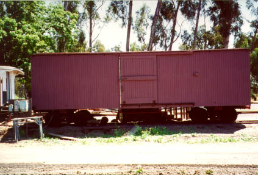

Carter Ventilated Boxcar Photo Gallery


South Pacific Coast No. 472, 28 foot Boxcar, built in 1880.

The following photos are from Denise Showalter as a part of documentation for an HOn3 model being created by Stephen Hatch. Progress of the car model is on his web site at: http://www.railway-eng.com/hon3/carter.htm.
Additional information on the photos was supplied by Randy Hees, President of the Society for the Preservation of Carter Railroad Resources (SPCRR) PO Box 783, Newark CA 94560. Randy has a web site with more infomation too:
The Birth of California Narrow Gauge.Thanks to all who have contributed to making this project possible, especially Ben Mesander, the host of the HOn3 email list, where this whole project was born.